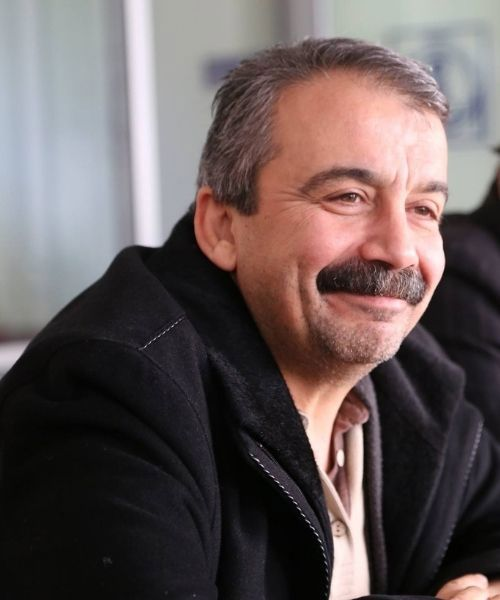

Narin: The Dark Face of an Era - 4
Sırrı Süreyya Önder, life wisdom, and Narin

On the Simplicity of Truth
In the foreword he wrote for the published screenplay of Beynelmilel, Sırrı Süreyya Önder quoted Dziga Vertov, one of the prominent names of Soviet revolutionary cinema: “It is not simple to show the truth, because the truth is simple.” He continued from this quotation by saying that in Beynelmilel, too, life and truth stood before him in that simplicity. When I spoke with him about the Narin case I find myself thinking, “if only,” I say, “Ah, if only I had known then about this foreword he wrote.” But I did not.
Shortly after I wrote the piece about the possibility that Narin’s family might be innocent, I thought that I should talk to Sırrı Süreyya about this and ask for his support. At the first opportunity I found, I brought up the issue with him in the corridors of Parliament. He used to like and read my writings. He generally did not miss much of what was published in the places where people like us share a common reading space. But he had not read my piece on Narin. So I first sent him the article and then the interview I did with Gökçer Tahincioğlu. In our next conversation I said, “President Sırrı, this matter is a difficult matter, but I will get involved in it, we have to get involved.”
He had now read the article and the interview, and he said, exactly and without any hesitation, “Handle it as you see fit, Hocam, I’m behind you all the way.” He truly said it like that. I told a journalist friend who visited us at home that same evening about this conversation. I remember saying to that friend, “This is what life knowledge, the knowledge of story and truth, looks like.” Who other than Sırrı Süreyya would understand, at a single reading, the truth standing before us in all its simplicity? Had he lived, we would also have had the opportunity to address this issue with him, to exchange views on how we might rescue this abandoned family from this nightmare. Despite all his burdens, he would have done what he could. I know this. Sadly, this was not possible.
But I think he continued to support me even after his death. In many of the articles and interviews I found and read after his passing, he continued to tell me with his sentences, “Handle it as you see fit, I’m behind you all the way.” For example, in one interview, when Sadi Çilingir asked him, “Then can we say that your storytelling has turned into a mission?” he replied: “It turned into one inevitably. Because there are those who say, ‘You voiced this. You will voice that, too.’ None of these are requests you can turn your back on.” Here, in a style Dear Sırrı Süreyya would have liked, I would like to continue and reinforce this emphasis with an example from a film.
The Responsibility of the Storyteller and the Film Léon
There is an unforgettable line in Léon, one of the major box office films of its time and also a good example of popular cinema. The little girl Mathilda knocks on Léon’s door; Léon, who once opened that door and saved her life, is behind the door but this time does not want to open it. Mathilda says, “You opened this door for me once; if you don’t open it now, it will be as if you never opened it.”
What is described here is the same as the mission and responsibility of the storyteller that Sırrı Süreyya spoke about. If you have once listened and chosen to tell, then you must continue to tell. Because in an age when even the most vital stories are lost as if written on water, you cannot voice a narrative dedicated to the search for justice once and then abandon it. To keep that narrative alive, to sustain it at proper intervals, becomes a condition of the pursuit of justice. When you let that narrative fall silent from your tongue, sadly there are very few waiting to lift its truth up from the ground. Sırrı Süreyya Önder was one of those who listened to the story and pain of the other and who gave it a voice. He bore a voice whose strength came from stories.
The Simplicity of Truth and the Narin Case
It was for this reason that he could grasp, at a glance, that in Narin’s killing the difficulty of showing the truth lay precisely in its simplicity. He was one of those people who, when voicing a story, kept in mind that every story touches many lives, that every life is valuable, and that we are mortal. Indeed, did not Walter Benjamin say, “Death is the sanction of everything the storyteller can tell. The storyteller borrows his authority from death”?
I believe that Sırrı Süreyya also very quickly understood who Nevzat was — Nevzat, who stood right there on Narin’s path, who changed his statements radically seven times, and whose statement that currently forms the basis of the court’s decision has now been revealed, plainly, to be utterly false. Moreover, in this case Sırrı Süreyya did not know about the final opinions or reports submitted on appeal. In fact, he did not need to. The person who killed the child had, with what he did up through the nineteenth day, at every stage shouted out loud that he was the killer. As I said, Sırrı Süreyya had the life wisdom to understand this, and he understood it.
Of course we cannot compare Sırrı Süreyya’s wisdom to those who, with spite and fury, attack those who voice the truth. We can only go on telling. We must go on telling what happened to Narin, that those who understand the simplicity of the truth are growing in number, that a protest is swelling like an avalanche. Narin could not make it up that path. As I wrote before: “Nevzat is right in the middle of this. In the middle. At a point where Narin, walking toward home, could have encountered him. In my view Narin was not able to take even one step past him. She could not, that poor little girl…”
Confusion of Mind and Ruthlessness
The last thing I must mention in speaking of Sırrı Süreyya Önder is that he led me to watch the Netflix series Adolescence. After putting it off, I watched it quickly following a conversation with him. Later, that four-part series often came to my mind as I was thinking about the Narin case. During a general assembly session he came up to me, and after asking how I was, he said, “My daughter also wrote a piece of film criticism,” and, with a proud smile at the corner of his lip, he sent me Ceren’s piece via WhatsApp right there.
That day, whether by a slip of the tongue or for some other reason, he called this four-part mini-series “cinema,” and later on I myself almost completely forgot that Adolescence was not a film but a mini-series. I experienced a mental mix-up, and when my friends asked, “Wasn’t it a series?” at the point where I called Adolescence a film, I said, “No, it was a film,” with certainty. Yet we know from what happened to Narin’s family just how dangerous the matter of a person’s mind becoming confused can be…
Because that is how it is; even ordinary fatigue or a small tension on a normal day can create confusion. You forget many things, or remember them differently. To expect that people who have experienced severe trauma will not have confused memories when, days later, they are required to recall the details of daily life is a grave mercilessness… Every statement by the Gürans that was labeled a contradiction was, in reality, a simple confusion of mind that cannot in any way be compared to Nevzat’s grand lies… Sadly, mercy never set foot in their neighborhood. Confusions of mind that could occur on the most ordinary day were mercilessly twisted.
The Series Adolescence and the Narin Case
Anyway, let us return to the series Adolescence. In order to read Ceren’s piece, that very night I immediately watched the four-part series back to back. Then I considered what happened to Narin and her family again, after this much-talked-about series. Let me explain that as well. In the piece I wrote for bianet in relation to the Narin case, I said that this family had no reason to kill their only daughter, and that no such reason had been found. The demagogues of social media jumped on the article, saying, “Do you need a ‘reason’ to kill a child, what sort of reason do you look for in the killing of a child,” and many self-styled wise minds angrily carried that argument forward.
Yet of course, seeking a plausible explanation as to why the family would commit such evil does not mean making the murder plausible. It means trying to understand with what motive, under what drive, this murder was committed. Indeed, in Adolescence, even though the murder is watched openly under the cameras and the killer is immediately arrested, throughout four episodes people exert frenzied effort to understand the motive of the child who committed this murder — in other words, the reason for the murder. Until all the pieces fall into place.
The Inconsistency of the Reasoned Judgment
In all the time that has passed since Narin’s killing, neither has any such motive been described, nor has a single person from the family or the village said anything despite all the torment. They did not speak, they could not speak. Because they knew nothing and had seen nothing. In short, although Narin’s brother, uncle, and mother are now in prison under severe isolation, nowhere — including in the court’s reasoned judgment — has even the faintest explanation been offered as to why they supposedly committed this murder. It is as if, for no reason at all, they said, “Let Narin come back from her course, and we will all kill her together.”
In this sense the reasoned judgment shamefully attempted to compensate for this lack of motive by speaking of an “as-yet-unrevealed principal purpose,” and left it there. Moreover, since they could not bring themselves to label Nevzat a liar, they reached, with a twist that had never once arisen during the hearings, the conclusion that Salim Güran had lied to Nevzat — “She witnessed my relationship with her mother, that’s why I killed her” — in order to conceal the principal purpose. As for what that principal purpose was, even now, nearly a year later, not a single explanation has been provided. It is not a joke; this is truly the situation…

Final Word: Wisdom and the Wish for Peace
In short, the difficulty of showing the simplicity of truth had become, through the exceptional personality of Sırrı Süreyya Önder, a point of focus. Today I wanted to write about this wisdom of his. Because rethinking the death of little Narin in the light of this wisdom is very illuminating. I would like once more to say, may Sırrı Süreyya rest in light. May the peace he dreamed of come true soon…